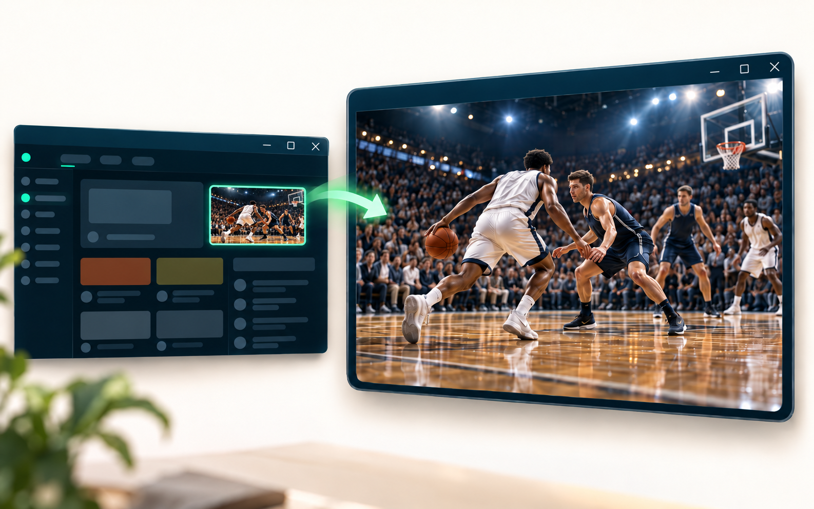
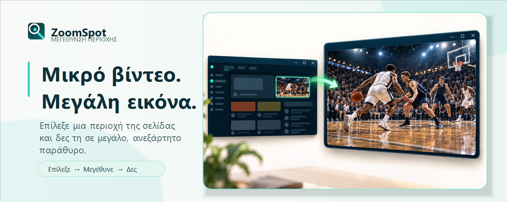
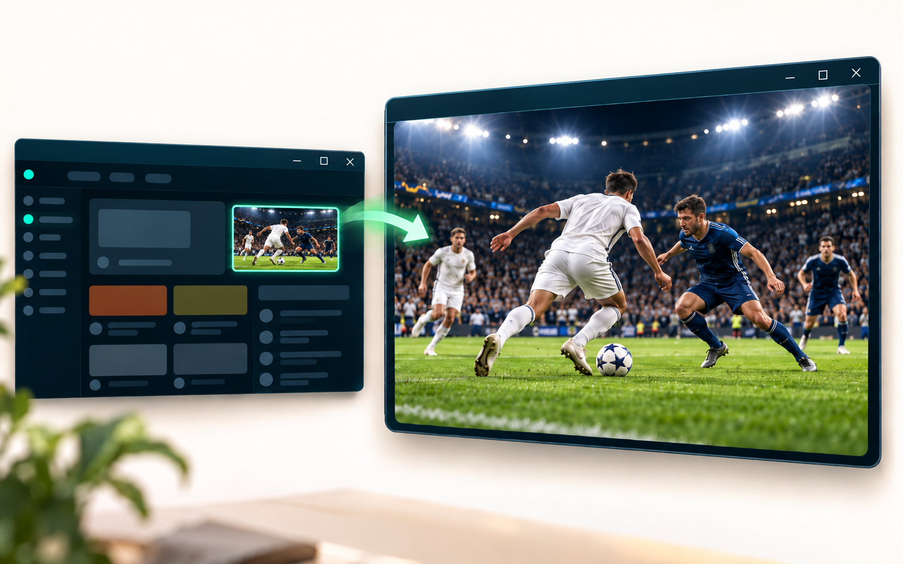

01
Επίλεξε την περιοχή
Πάτησε το ZoomSpot και σύρε τον δείκτη γύρω από το τμήμα που θέλεις. Η επιλογή ξεκινά μόνο μετά από δική σου ενέργεια.

Δωρεάν επέκταση για Chrome
Επίλεξε ένα βίντεο, γράφημα ή μια μικρή λεπτομέρεια και δες το σε μεγαλύτερη, ζωντανή προβολή — χωρίς να χάνεις την αρχική σελίδα.
Chrome 116+ · Χωρίς λογαριασμό · v1.3.0

Μικρή περιοχή. Καθαρή εστίαση.
Το ZoomSpot απομονώνει οπτικά το τμήμα που επιλέγεις και το κρατά ζωντανό σε δικό του παράθυρο. Ιδανικό για βίντεο, μαθήματα, γραφήματα, dashboards και λεπτομέρειες που χάνονται σε μια γεμάτη σελίδα.
Δύο απλές κινήσεις
Πάτησε το ZoomSpot και σύρε τον δείκτη γύρω από το τμήμα που θέλεις. Η επιλογή ξεκινά μόνο μετά από δική σου ενέργεια.

Άλλαξε το μέγεθος του παραθύρου, μετακίνησε την περικοπή, ρύθμισε το zoom ή πέρασε σε πλήρη οθόνη και Picture-in-Picture.

Φτιαγμένο για καθημερινή χρήση
Άνοιξε διαφορετικές περιοχές από την ίδια καρτέλα και κράτησέ τες ενεργές ταυτόχρονα.
Κράτησε την επιλεγμένη περιοχή πάνω από τα άλλα παράθυρα όταν χρειάζεσαι συνεχή αναφορά.
Μετακίνησε την περιοχή με τα βελάκια, άλλαξε zoom με +/− και επανάφερε την αρχική επιλογή με R.
Οι αποθηκευμένες περιοχές εμφανίζονται μόνο στον ιστότοπο όπου δημιουργήθηκαν.
Απόρρητο από τον σχεδιασμό
Το ZoomSpot δεν έχει λογαριασμούς, server εφαρμογής, διαφημίσεις ή analytics. Τα καρέ χρησιμοποιούνται προσωρινά για τη ζωντανή προβολή και δεν δημιουργείται αρχείο βίντεο ή στιγμιότυπο.
Χρήσιμες λεπτομέρειες
Σε κανονικές ιστοσελίδες στον Chrome 116 ή νεότερο για υπολογιστή. Εσωτερικές σελίδες του Chrome και άλλες περιορισμένες σελίδες δεν επιτρέπουν τη λειτουργία επεκτάσεων.
Ναι. Η προβολή είναι ζωντανή και προέρχεται από την αρχική καρτέλα, επομένως η σελίδα πρέπει να παραμένει ανοιχτή.
Όχι. Ο ήχος παραμένει στην αρχική σελίδα και δεν καταγράφεται από το ZoomSpot.
Ορισμένο περιεχόμενο με προστασία DRM μπορεί να εμφανίζεται μαύρο, επειδή ο Chrome εμποδίζει τη λήψη του.
ZoomSpot για Chrome
Επίλεξε. Μεγέθυνε. Εστίασε.